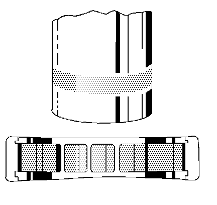
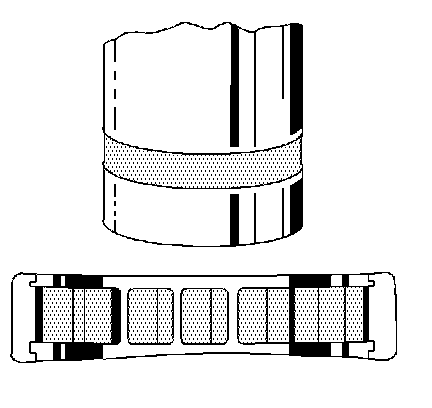
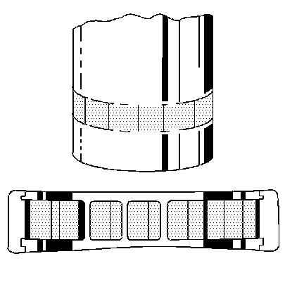
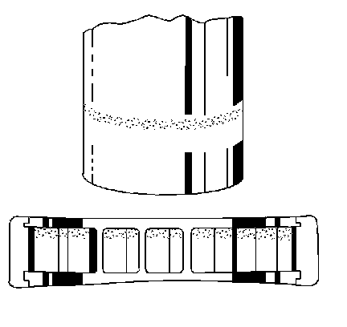
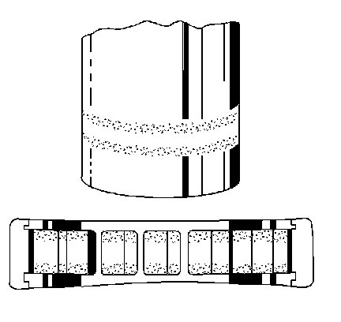
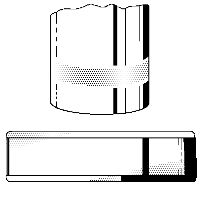
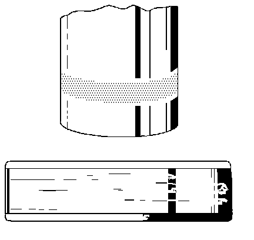
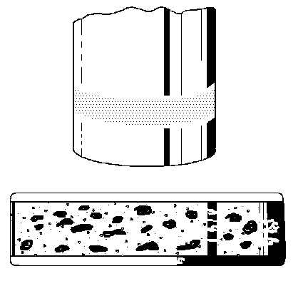

Wheel Bearing Wear - Rear Drive Axle (Straight)
Wheel Bearing Wear - Rear Drive Axle (Straight)
Straight Roller Bearing Diagnosis
Consider the following factors when diagnosing a bearing condition:
^ Note the general condition of all parts during disassembly and inspection.
^ Classify the failure with the aid of the illustrations.
^ Determine the cause.
^ Make all repairs following recommended procedures.
Wear (Minor)
Wear (Minor):

Light pattern on races and rollers can be caused by fine abrasives. Clean all of the parts including the housings. Check the seals. Replace the bearings if rough or noisy. Replace the shaft if damaged.
Wear (Major)
Wear (Major):

Heavy pattern on races and rollers can be caused by fine abrasives. Clean all of the parts including the housing. Check the seals. Replace the bearings if rough or noisy. Replace the shaft if damaged.
Brinelling
Brinelling:

Surface indentations in the raceway can be caused by roll either under impact loading or vibration while the bearing is not rotating. Replace the bearing if rough or noisy. Replace the shaft if damaged.
Indentations
Identations:
Surface depressions on race and rollers can be caused by hard particles of foreign material. Clean all of the parts, including the housing. Check the seals. Replace the bearings if rough or noisy. Replace the shaft if damaged.
Single Edge Pitting
Single Edge Pitting:

Flaking of surface metal results from fatigue, usually at one edge of race and rollers. Replace the bearing. Clean all related parts. Replace the shaft if damaged.
Double Edge Pitting
Double Edge Pitting:

Flaking of surface metal results from fatigue, usually at both edges of the race and rollers. Replace the bearing. Clean all related parts. Replace the shaft if damaged.
Misalignment
Misalignment:

Outer misalignment due to a foreign object. Replace the bearing. Ensure races are properly seated. Replace the shaft if the bearing operating surface is damaged.
Frettage
Frettage:

Corrosion set up by a small relative movement of parts with no lubrication. Replace the bearing. Clean all the relative parts. Check the seals. Check for proper fit and lubrication. Replace the shaft if damaged.
Smears
Smears:

Smearing of metal due to slippage. Slippage can be caused by poor fits, lack of lubrication, overheating, overloads or handling damage. Replace the bearing. Clean all the related parts. Check for proper fit and lubrication.